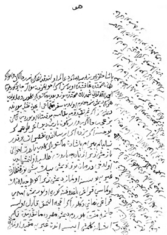

Belge 9: TKSA E.2457/1, i’lâm
Belge 9
“Huwa
Paşa hazretlerine selâmlar, du’âlar olundukdan sonra, hâliniz ve ahvâliniz [nicedir], hemân sıhhatte ‘afiyette olasız.
Eğer ahvâlimizden su’âl câyiz görilürse elhamdülillâhi ta’âlâ şimdilik sıhhatteyüz ve ba’dehû mektûbunuz gelüb, vusûl buldu, he ne ki dimişsiz ma’lûm oldu.
Sefer mühimmâtı içün takayyüd buyrula, demişsiz. Eğer benim takayyüdüme bakılsa çok senâlar (?) olurdu; lâkin biz ‘aceb halleri var, bugün yarın deyü ağır tutarlar, yogsa eğer bizde eğer Arslanım’da (pâdişah IV. Murad) taksîrat yokdur, neyliyelim Bayram paşa’dan mektûblar geldi, barut ahvâlini yazmış, zirâ ziyâde barut taleb olunmuş idi, ol dahi dermân yok dimiş. Bin beş yüz kantar gayrıya bulunsa olmaz dimiş. Zirâ güherçilenin olması kırağı yağduğuna göre olur, dimiş. İmdi kırağı zamanı değildir, eğer akça [ile] alınmak kâbil olsa cânıma minnet bilürdüm, demiş. Mısır’da mâ-takaddümde neki Asîtâne’ye (?) gelmiş ise andan gayrıya müfid olmazmış. İnşallâhu ta’âlâ girü mümkün olan mertebe çalışırım dimiş. Şerîfler ahvâli dahi bir şekil olmuş. Şimdi ol anladayor (?). Bir yara onulmadan bir yara açılur hemân Hakk ta’âlâ kendi mülkünü ma’mûr ide. Amma inşallâhu ta’âlâ bunda bulunan barut vesâyir gönderilür. Allâh kerîmdir. Her umûru Hazret-i Bârî’ye tevfîz eyledik, biz dahi bolayki ol cânibe [bir kelime] varasız. Zirâ tebdîl ahvâlini işidirlerse ol cânibi yalnız komayalar idi, girü lâzım olan ahvâli bildirmekden hâli olmayasız.”
Yorum:
Damâd Bayram Paşa, IV. Murad döneminde 1633 yılı Ekimi’nde İstanbul’da vezir kaymakamlığına getirildi. Bayram Paşa, 2 Şubat 1637’de veziriâzam oldu ve Şark seferine serdâr atandı. IV. Murad’ın Bagdad seferi için Anadolu’da mühimmat hazırlamak üzere gönderildi (Mart 1636). 1637 Ekimi’nde kışlamak üzere Amasya’ya çekildi. Sultan Murad, ertesi bahar Bagdad seferine hareket edecektir. Yukarıdaki belge, onun Anadolu’da hazırlık yaptığı zamana rastlamış olmalı. Belgeyi yazan Kösem Sultan’dır, zirâ oğlu Sultan Murad’dan “Arslanım” diye söz etmekte.